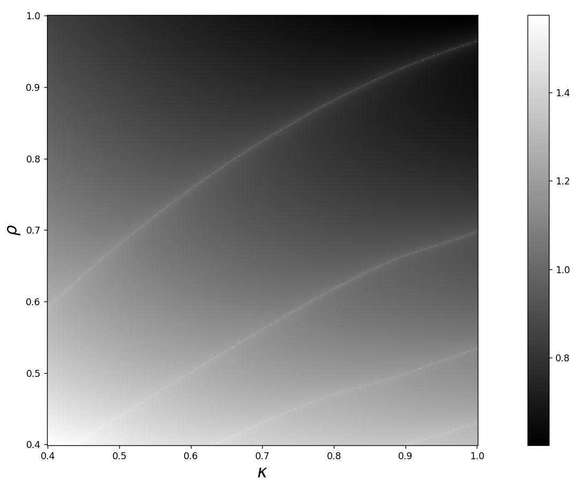

Game theory · Probability · Scientific computing
Brownian Boost: incentives in motion.
A research project about a simple strategic tension: when two players can pay to influence a random contest, how does an imbalance in their incentives reshape the equilibrium?
Research context
How much imbalance can a fair-looking game hide?
This project builds on Alan Hammond’s On the Trail of Lost Pennies and From Tug-of-War to Brownian Boost.
A token moves back and forth on the integer lattice. Maxine wants to push it to the right; Mina wants to push it to the left. Both players are offered a reward if the ticker eventually drifts in their direction. At every position, both players choose a stake. Larger stakes improve their chance of controlling the next step, but they also cost more—so every move asks the same question: how much is a small advantage worth?
In the simplest version of the game, if Maxine and Mina stake a and b, the probability of moving right is
Equilibrium strategies
One value describes an equilibrium pair of strategies.
The newer model places the original move rule inside a two-parameter family:
Keeping κ, ρ in (0,1)2, κ controls the mixture between a fair coin and competition, while ρ determines how strongly the contest rewards the larger stake.
We study strategies that depend only on the token’s position. It turns out that this entire class of equilibrium strategies can be parameterized by a single positive number, x: the ratio of Mina’s derivative of expected return to Maxine’s derivative of expected return near the center of the board. We call x the local incentive.
Finally, we define a function Mκ,ρ(x) on this variable. For each equilibrium strategy indexed by x, Mκ,ρ(x) records the asymmetry in the players’ incentives: how much Mina is offered upon winning for every dollar Maxine is offered in that equilibrium strategy.
Two directions
One object, two ways to study it.
The project combines computational experiments with a developing theoretical account of why the curves have the structure we observe.
Numerical exploration
Why isn’t M always one?
At first glance, one might expect M to be identically one: in a game that can continue for so long, even a tiny incentive advantage has time to accumulate. Instead, the equilibrium family supports small but nonzero asymmetries, so we set out to visualize how large M − 1 can become across the (κ, ρ) parameter space.
Producing these plots required new numerically stable expressions for the series defining M, high-precision arithmetic, adaptive tail bounds for truncation, and parallel C++ sweeps deployed on the Berkeley Research Computing Cluster.

Parameter slice
M on the (1, ρ) parameter slice.
In the black-and-gray plot above, we see that the maximum of M − 1 dips sharply near κ = 1, ρ = 0.96. Normalizing M − 1 to have a constant L2 norm and animating it along the segment κ = 1 reveals fascinating qualitative transitions.
Theoretical track
Why does M have this shape?
The theoretical side will connect the geometry seen in the experiments to the underlying equilibrium equations: how asymmetry propagates through the game, why λmax forms bands in parameter space, and what controls the oscillatory small-ρ limit.
Analysis in progress · this section will grow with the project